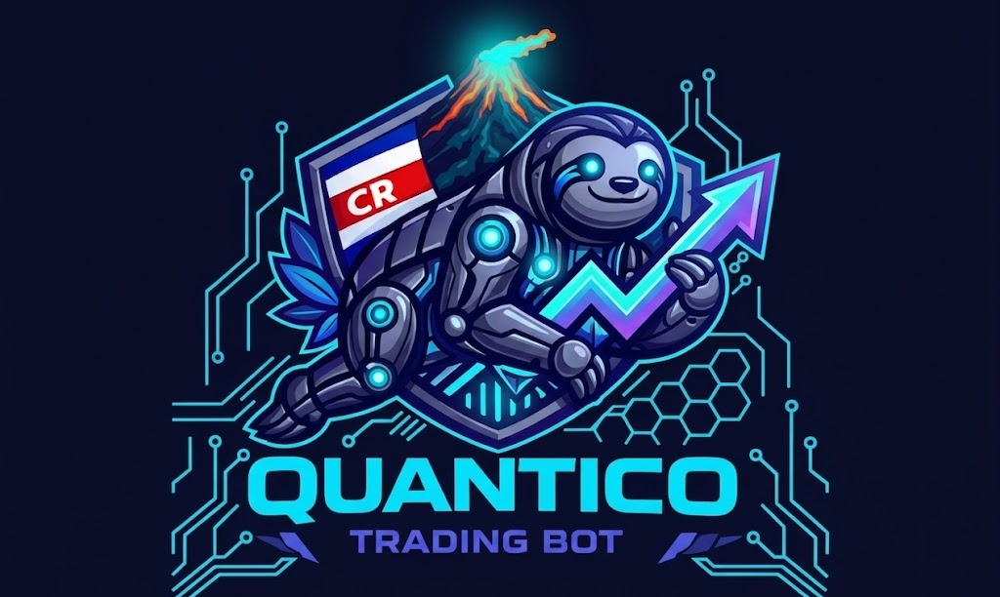

Analiza mercados 24/7 con machine learning, detecta oportunidades de alta probabilidad y te alerta al instante. Sin emociones, sin ruido, solo datos.
Herramientas profesionales de analisis en una sola plataforma
Modelos entrenados con 32 indicadores tecnicos por activo. Predicciones de probabilidad con porcentaje de confianza. Reentrenado periodicamente con datos frescos.
Detecta rupturas de maximos y minimos de 20 periodos, confirmadas por la direccion del mercado (ADX + DI). Solo opera cuando la tendencia respalda la senal.
Recibe notificaciones directas cuando se detecta una oportunidad. Incluye precio de entrada, stop loss, take profit y nivel de confianza del modelo.
Visualiza donde se acumulan las posiciones apalancadas. Identifica zonas de liquidacion masiva que pueden generar movimientos explosivos de precio.
Simula la estrategia con datos reales de hasta 2 anos. Incluye retornos mensuales, maximo drawdown, ratio de ganancia y curva de capital.
Pide un analisis detallado del mercado actual. La IA evalua indicadores, contexto y riesgo para darte una recomendacion fundamentada en lenguaje claro.
Vista general de todos los activos en una tabla. Score, prediccion ML, confluencia de senales, niveles de soporte/resistencia y alertas de correlacion entre pares.
Calcula tamano de posicion, apalancamiento, precio de liquidacion, margen, stop loss y take profit. Soporta modo spot y futuros con cualquier leverage.
Verifica que la tendencia este alineada en multiples temporalidades (15m, 1h, 4h, 1d). Reduce falsas senales operando solo cuando todo coincide.
Calcula soportes y resistencias clave con la distancia porcentual desde el precio actual. Identifica zonas donde el precio tiende a rebotar o romper.
Velas japonesas con EMAs, Bollinger Bands, RSI, volumen, zonas de SL/TP y niveles clave. Zoom con scroll y hover para ver datos exactos de cada vela.
Curva de equity, profit factor, ratio de Sharpe, maximo drawdown, win rate por activo y track record completo de todas las operaciones con export CSV.
De los datos a la decision en segundos
Quantico descarga datos en tiempo real de exchanges y calcula 32 indicadores tecnicos por activo.
Los modelos XGBoost analizan los patrones y calculan la probabilidad de movimiento en las proximas horas.
La estrategia Breakout 20 busca rupturas de precio confirmadas por la tendencia del mercado.
Recibes una alerta por Telegram con entrada, stop loss, take profit y confianza del modelo.
Criptomonedas y oro, con modelos ML individuales por activo
Acceso completo a todas las funciones por un precio accesible
Metodos de pago aceptados
Quantico es una herramienta de analisis y asistencia para trading. NO es asesoria financiera, de inversion ni recomendacion de compra o venta de ningun activo.
Nunca inviertas dinero que no puedes permitirte perder.